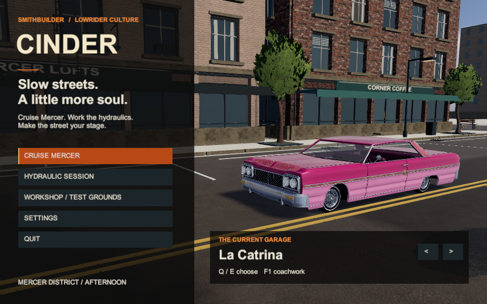
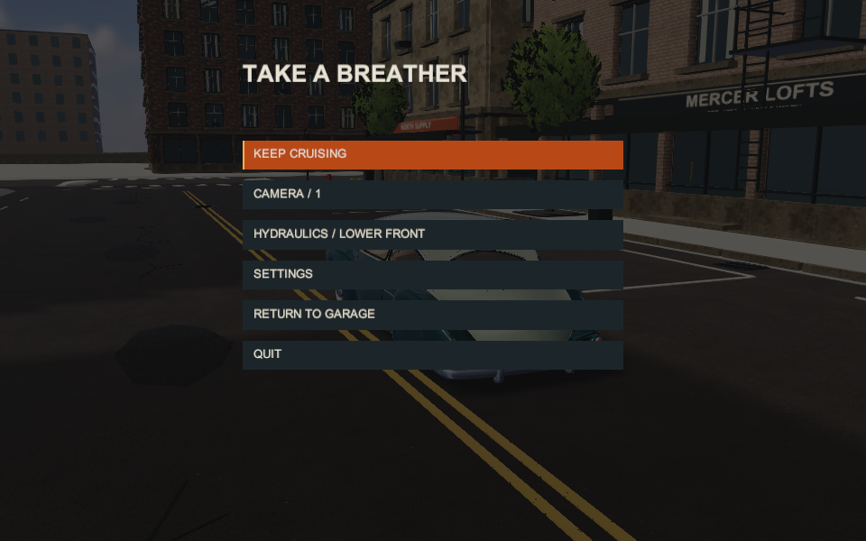
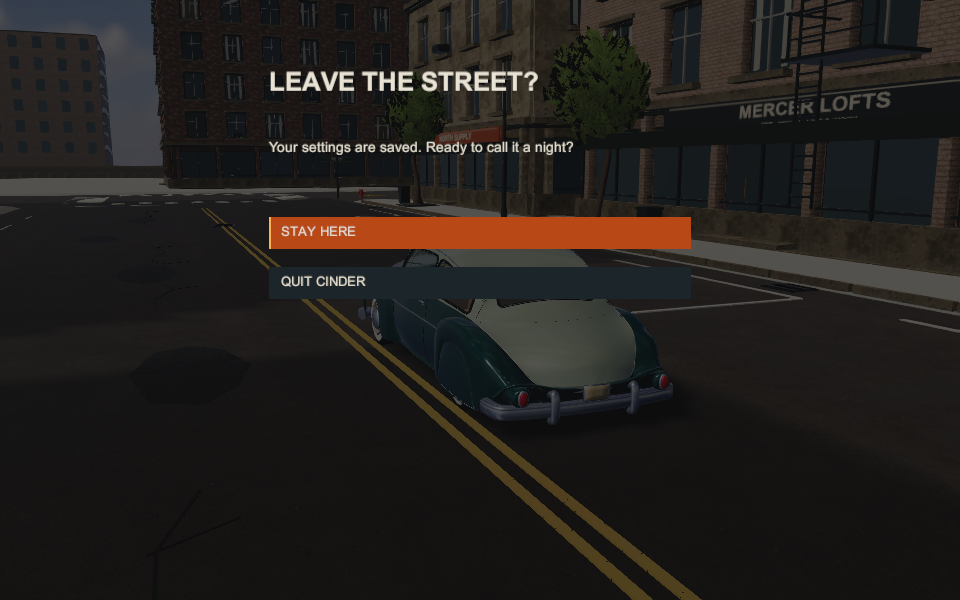
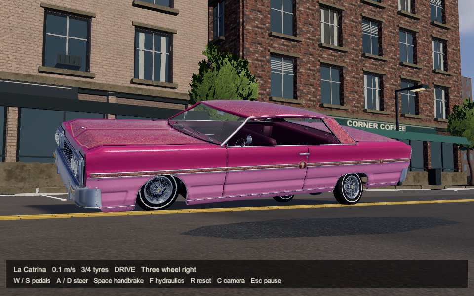
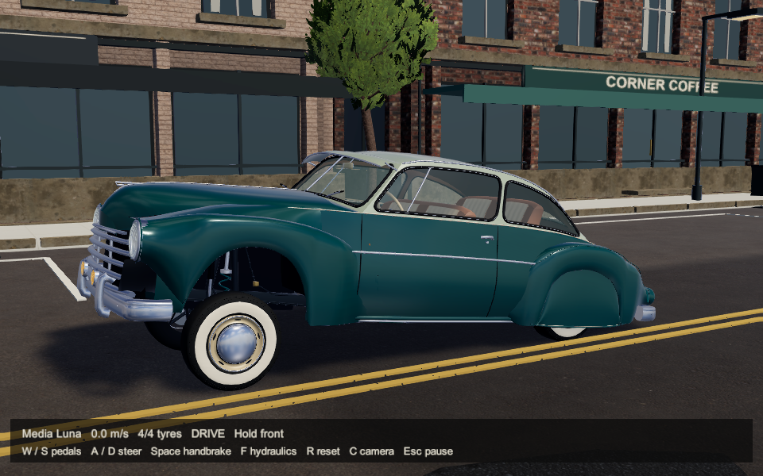
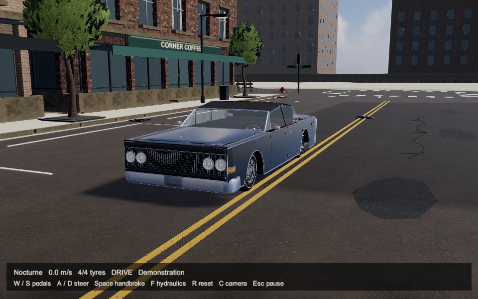
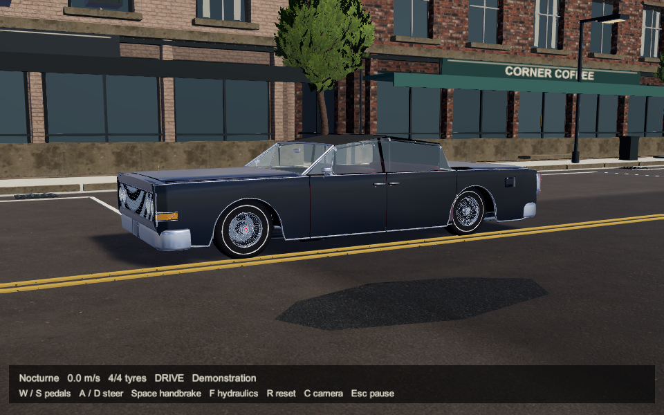
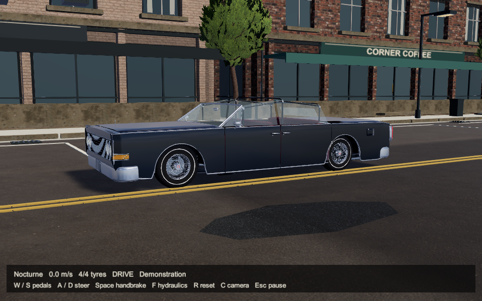
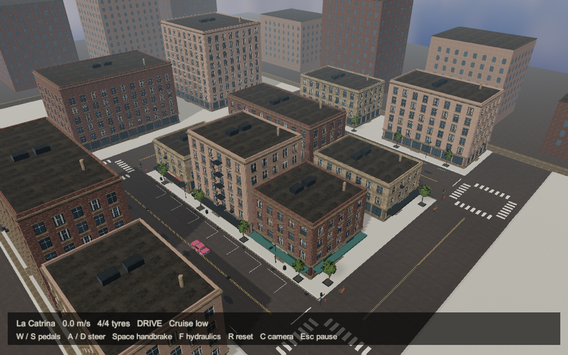

SmithBuilder / Cinder / November 9, 2026 PacificLow streets.
The cars have their character back.
The Unity prototype restores native Mercer geometry, street materials and lowrider finishes. La Catrina, Media Luna and Nocturne remain the focus. Safari and buggy racing come later.
Reviewed prototype, not Level 2 art approval. Independent scores: city 6/10; cars and lighting 7/10. Native-relative regressions are repaired in inspected views. The city still needs more life, a distinctive gathering destination and finish polish. Physical feel, heard audio, enjoyment and handheld 1080p/60 remain unverified.
Start here and controls · Delivery details · Independent whole-candidate review · Unity source on GitHub main
Actual player / 69 seconds
The local clip contains 2,070 original 960 x 600 / 30 fps frames: menu flow, Catrina hydraulics and driving, Luna lift/lower, Nocturne air and roof cycle. It is silent automated evidence. Video stays local and is not committed to GitHub.
The six-still review packet

The lowrider garage
Pause and controls
Quit confirmation
La Catrina: right three-wheel stance
Media Luna: hydraulic lift
Nocturne: fully raised roof stateSeparate focused checks
The low frontal angle and tinted glazing can obscure the canopy. These two unchanged side-view controls share the same fully raised state and camera. The normal image has continuous canvas; the hidden-cloth control removes only its renderers.

Normal native two-sided canvas
Diagnostic control: cloth hidden
Restored Mercer: original facades, context buildings, trees and street detail853 technical checks and 10 scripted menu checks pass. The matched Catrina scene has 693,585 active geometry triangles and 212 measured maximum draw calls. This capped capture profile does not establish target-device performance.
Hashes and capture sources · Preserved rejected r9 comparison